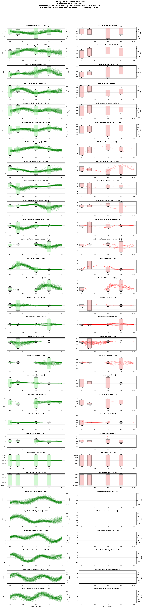
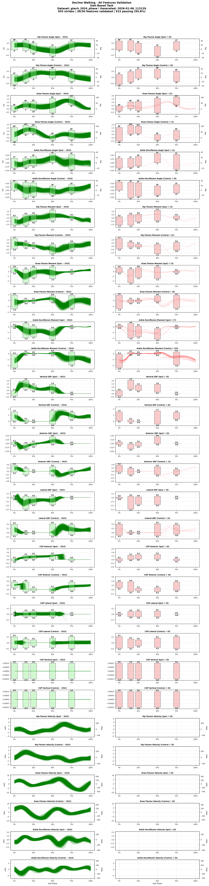
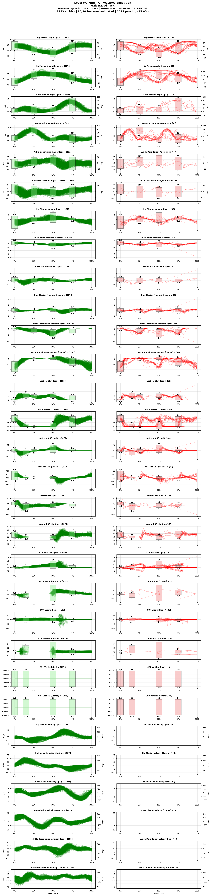
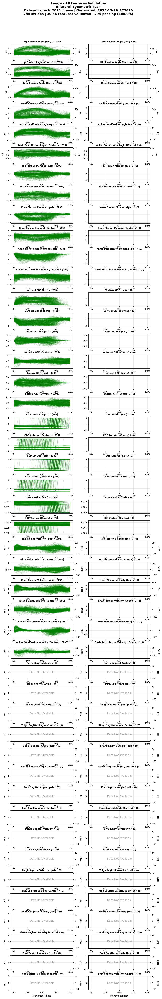
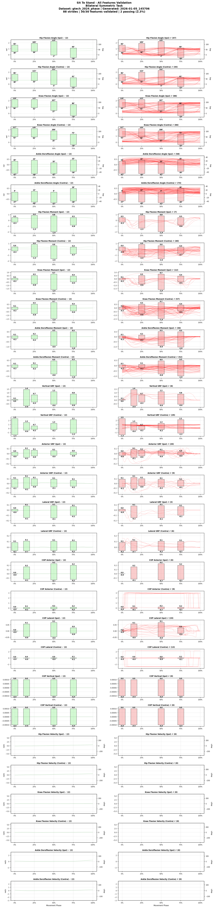
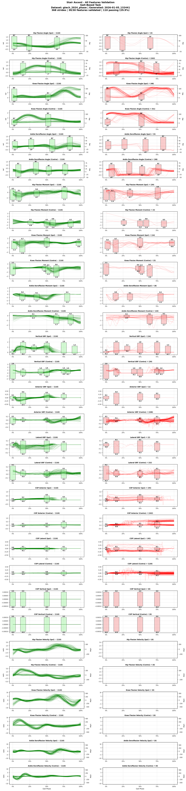
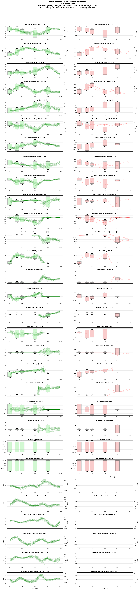
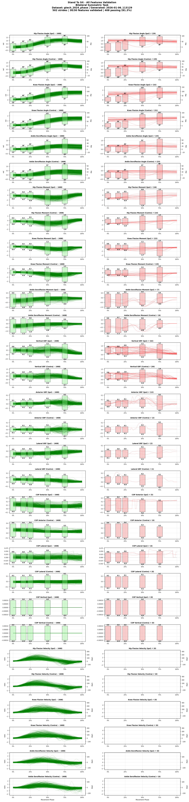

GaTech 2024 (TaskAgnostic)
These files and reports use earlier conversions and have not yet been re-checked. Read the processing notes and recorded checks before analysis.
Study and converted data
Overview
- Short Code: GT24
- Year: 2024
- Institution: EPIC Lab (Georgia Tech)
Dataset from "Task-agnostic exoskeleton control via biological joint moment estimation" (Nature 2024). Contains comprehensive biomechanical data from 25 able-bodied adults performing 28 different activities while wearing a clothing-integrated hip exoskeleton. Includes joint kinematics, kinetics, ground reaction forces, and exoskeleton sensor data collected at 200 Hz across three collection phases.
Downloads
Dataset Information
Subjects and Tasks
- Number of Subjects: 22
- Tasks Included: Backward Walking, Cutting, Decline Walking, Incline Walking, Jump, Level Walking, Lunge, Run, Sit To Stand, Squat, Stair Ascent, Stair Descent, Stand To Sit
Subject Metadata
The table below summarizes the subject_metadata key:value pairs per subject.
| Subject | weight_kg | day | phase |
|---|---|---|---|
| GT24_BT01 | 84.3 | 1 | 1 |
| GT24_BT02 | 79.1 | 1 | 1 |
| GT24_BT03 | 101.5 | 1 | 1 |
| GT24_BT06 | 85.8 | 1 | 1 |
| GT24_BT07 | 70.6 | 1 | 1 |
| GT24_BT08 | 75.7 | 1 | 1 |
| GT24_BT09 | 89.0 | 1 | 1 |
| GT24_BT10 | 100.1 | 1 | 1 |
| GT24_BT11 | 57.0 | 1 | 1 |
| GT24_BT12 | 84.6 | 1 | 1 |
| GT24_BT13 | 96.0 | 1 | 2 |
| GT24_BT14 | 74.3 | 1 | 2 |
| GT24_BT15 | 65.9 | 1 | 2 |
| GT24_BT16 | 72.0 | 1 | 2 |
| GT24_BT17 | 67.4 | 1 | 2 |
| GT24_BT18 | 75.0 | 1 | 3 |
| GT24_BT19 | 76.8 | 1 | 3 |
| GT24_BT20 | 62.5 | 1 | 3 |
| GT24_BT21 | 65.9 | 1 | 3 |
| GT24_BT22 | 84.3 | 1 | 3 |
| GT24_BT23 | 74.2 | 1 | 3 |
| GT24_BT24 | 84.8 | 1 | 3 |
Task Catalog
| Task | Task ID | Task Info |
|---|---|---|
| backward_walking | backward_walking | leg:l,exo_state:powered,exo_joints:hip_knee,speed_m_s:0.6,incline_deg:0.0 |
| leg:l,exo_state:powered,exo_joints:hip_knee,speed_m_s:0.8,incline_deg:0.0 | ||
| leg:l,exo_state:powered,exo_joints:hip_knee,speed_m_s:1.0,incline_deg:0.0 | ||
| leg:l,exo_state:worn_unpowered,exo_joints:hip_knee,speed_m_s:0.6,incline_deg:0.0 | ||
| leg:l,exo_state:worn_unpowered,exo_joints:hip_knee,speed_m_s:0.8,incline_deg:0.0 | ||
| leg:l,exo_state:worn_unpowered,exo_joints:hip_knee,speed_m_s:1.0,incline_deg:0.0 | ||
| leg:r,exo_state:powered,exo_joints:hip_knee,speed_m_s:0.6,incline_deg:0.0 | ||
| leg:r,exo_state:powered,exo_joints:hip_knee,speed_m_s:0.8,incline_deg:0.0 | ||
| leg:r,exo_state:powered,exo_joints:hip_knee,speed_m_s:1.0,incline_deg:0.0 | ||
| leg:r,exo_state:worn_unpowered,exo_joints:hip_knee,speed_m_s:0.6,incline_deg:0.0 | ||
| leg:r,exo_state:worn_unpowered,exo_joints:hip_knee,speed_m_s:0.8,incline_deg:0.0 | ||
| leg:r,exo_state:worn_unpowered,exo_joints:hip_knee,speed_m_s:1.0,incline_deg:0.0 | ||
| cutting | cutting | leg:l,exo_state:powered,exo_joints:hip_knee,incline_deg:0.0 |
| leg:l,exo_state:worn_unpowered,exo_joints:hip_knee,incline_deg:0.0 | ||
| leg:r,exo_state:powered,exo_joints:hip_knee,incline_deg:0.0 | ||
| leg:r,exo_state:worn_unpowered,exo_joints:hip_knee,incline_deg:0.0 | ||
| decline_walking | decline_10deg | leg:l,exo_state:powered,exo_joints:hip_knee,incline_deg:-10.0 |
| leg:l,exo_state:worn_unpowered,exo_joints:hip_knee,incline_deg:-10.0 | ||
| leg:r,exo_state:powered,exo_joints:hip_knee,incline_deg:-10.0 | ||
| leg:r,exo_state:worn_unpowered,exo_joints:hip_knee,incline_deg:-10.0 | ||
| decline_5deg | leg:l,exo_state:powered,exo_joints:hip_knee,incline_deg:-5.0 | |
| leg:l,exo_state:worn_unpowered,exo_joints:hip_knee,incline_deg:-5.0 | ||
| leg:r,exo_state:powered,exo_joints:hip_knee,incline_deg:-5.0 | ||
| leg:r,exo_state:worn_unpowered,exo_joints:hip_knee,incline_deg:-5.0 | ||
| incline_walking | incline_10deg | leg:l,exo_state:powered,exo_joints:hip_knee,exo_controller:hilo,incline_deg:10.0 |
| leg:l,exo_state:powered,exo_joints:hip_knee,incline_deg:10.0 | ||
| leg:l,exo_state:worn_unpowered,exo_joints:hip_knee,incline_deg:10.0 | ||
| leg:r,exo_state:powered,exo_joints:hip_knee,exo_controller:hilo,incline_deg:10.0 | ||
| leg:r,exo_state:powered,exo_joints:hip_knee,incline_deg:10.0 | ||
| leg:r,exo_state:worn_unpowered,exo_joints:hip_knee,incline_deg:10.0 | ||
| incline_5deg | leg:l,exo_state:powered,exo_joints:hip_knee,exo_controller:hilo,incline_deg:5.0 | |
| leg:l,exo_state:powered,exo_joints:hip_knee,incline_deg:5.0 | ||
| leg:l,exo_state:worn_unpowered,exo_joints:hip_knee,incline_deg:5.0 | ||
| leg:r,exo_state:powered,exo_joints:hip_knee,exo_controller:hilo,incline_deg:5.0 | ||
| leg:r,exo_state:powered,exo_joints:hip_knee,incline_deg:5.0 | ||
| leg:r,exo_state:worn_unpowered,exo_joints:hip_knee,incline_deg:5.0 | ||
| jump | jump | leg:l,exo_state:powered,exo_joints:hip_knee,incline_deg:0.0 |
| leg:l,exo_state:worn_unpowered,exo_joints:hip_knee,incline_deg:0.0 | ||
| level_walking | level_0.6ms | leg:l,exo_state:powered,exo_joints:hip_knee,speed_m_s:0.6,incline_deg:0.0 |
| leg:l,exo_state:worn_unpowered,exo_joints:hip_knee,speed_m_s:0.6,incline_deg:0.0 | ||
| leg:r,exo_state:powered,exo_joints:hip_knee,speed_m_s:0.6,incline_deg:0.0 | ||
| leg:r,exo_state:worn_unpowered,exo_joints:hip_knee,speed_m_s:0.6,incline_deg:0.0 | ||
| level_1.2ms | leg:l,exo_state:powered,exo_joints:hip_knee,exo_controller:hilo,speed_m_s:1.2,incline_deg:0.0 | |
| leg:l,exo_state:powered,exo_joints:hip_knee,speed_m_s:1.2,incline_deg:0.0 | ||
| leg:l,exo_state:worn_unpowered,exo_joints:hip_knee,speed_m_s:1.2,incline_deg:0.0 | ||
| leg:r,exo_state:powered,exo_joints:hip_knee,exo_controller:hilo,speed_m_s:1.2,incline_deg:0.0 | ||
| leg:r,exo_state:powered,exo_joints:hip_knee,speed_m_s:1.2,incline_deg:0.0 | ||
| leg:r,exo_state:worn_unpowered,exo_joints:hip_knee,speed_m_s:1.2,incline_deg:0.0 | ||
| level_1.8ms | leg:l,exo_state:powered,exo_joints:hip_knee,speed_m_s:1.8,incline_deg:0.0 | |
| leg:l,exo_state:worn_unpowered,exo_joints:hip_knee,speed_m_s:1.8,incline_deg:0.0 | ||
| leg:r,exo_state:powered,exo_joints:hip_knee,speed_m_s:1.8,incline_deg:0.0 | ||
| leg:r,exo_state:worn_unpowered,exo_joints:hip_knee,speed_m_s:1.8,incline_deg:0.0 | ||
| lunge | lunge | leg:l,exo_state:powered,exo_joints:hip_knee,incline_deg:0.0 |
| leg:l,exo_state:worn_unpowered,exo_joints:hip_knee,incline_deg:0.0 | ||
| run | run_2.0ms | leg:l,exo_state:powered,exo_joints:hip_knee,speed_m_s:2.0,incline_deg:0.0 |
| leg:l,exo_state:worn_unpowered,exo_joints:hip_knee,speed_m_s:2.0,incline_deg:0.0 | ||
| leg:r,exo_state:powered,exo_joints:hip_knee,speed_m_s:2.0,incline_deg:0.0 | ||
| leg:r,exo_state:worn_unpowered,exo_joints:hip_knee,speed_m_s:2.0,incline_deg:0.0 | ||
| run_2.5ms | leg:l,exo_state:powered,exo_joints:hip_knee,speed_m_s:2.5,incline_deg:0.0 | |
| leg:l,exo_state:worn_unpowered,exo_joints:hip_knee,speed_m_s:2.5,incline_deg:0.0 | ||
| leg:r,exo_state:powered,exo_joints:hip_knee,speed_m_s:2.5,incline_deg:0.0 | ||
| leg:r,exo_state:worn_unpowered,exo_joints:hip_knee,speed_m_s:2.5,incline_deg:0.0 | ||
| sit_to_stand | sit_to_stand | leg:l,exo_state:powered,exo_joints:hip_knee,incline_deg:0.0 |
| leg:l,exo_state:worn_unpowered,exo_joints:hip_knee,incline_deg:0.0 | ||
| squat | squat | leg:l,exo_state:powered,exo_joints:hip_knee,incline_deg:0.0 |
| leg:l,exo_state:worn_unpowered,exo_joints:hip_knee,incline_deg:0.0 | ||
| stair_ascent | curb_up | leg:l,exo_state:powered,exo_joints:hip_knee,incline_deg:0.0 |
| leg:l,exo_state:worn_unpowered,exo_joints:hip_knee,incline_deg:0.0 | ||
| leg:r,exo_state:powered,exo_joints:hip_knee,incline_deg:0.0 | ||
| leg:r,exo_state:worn_unpowered,exo_joints:hip_knee,incline_deg:0.0 | ||
| step_up | leg:l,exo_state:powered,exo_joints:hip_knee,incline_deg:0.0 | |
| leg:l,exo_state:worn_unpowered,exo_joints:hip_knee,incline_deg:0.0 | ||
| leg:r,exo_state:powered,exo_joints:hip_knee,incline_deg:0.0 | ||
| leg:r,exo_state:worn_unpowered,exo_joints:hip_knee,incline_deg:0.0 | ||
| stair_descent | curb_down | leg:l,exo_state:powered,exo_joints:hip_knee,incline_deg:0.0 |
| leg:l,exo_state:worn_unpowered,exo_joints:hip_knee,incline_deg:0.0 | ||
| leg:r,exo_state:powered,exo_joints:hip_knee,incline_deg:0.0 | ||
| leg:r,exo_state:worn_unpowered,exo_joints:hip_knee,incline_deg:0.0 | ||
| stand_to_sit | stand_to_sit | leg:l,exo_state:powered,exo_joints:hip_knee,incline_deg:0.0 |
| leg:l,exo_state:worn_unpowered,exo_joints:hip_knee,incline_deg:0.0 |
Feature Availability by Task
Coverage computed from `converted_datasets/gtech_2024_phase.parquet`.
Ground Reaction Forces
| Feature | Backward Walking | Cutting | Decline Walking | Incline Walking | Jump | Level Walking | Lunge | Run | Sit To Stand | Squat | Stair Ascent | Stair Descent | Stand To Sit |
|---|---|---|---|---|---|---|---|---|---|---|---|---|---|
grf_anterior_contra_BW |
≈ 97.70 | ✔ | ≈ 97.00 | ≈ 97.60 | ✔ | ≈ 97.20 | ✔ | ✔ | ✔ | ✔ | ✔ | ✔ | ✔ |
grf_anterior_ipsi_BW |
✔ | ✔ | ✔ | ✔ | ✔ | ✔ | ✔ | ✔ | ✔ | ✔ | ✔ | ✔ | ✔ |
grf_lateral_contra_BW |
≈ 97.70 | ✔ | ≈ 97.00 | ≈ 97.60 | ✔ | ≈ 97.20 | ✔ | ✔ | ✔ | ✔ | ✔ | ✔ | ✔ |
grf_lateral_ipsi_BW |
✔ | ✔ | ✔ | ✔ | ✔ | ✔ | ✔ | ✔ | ✔ | ✔ | ✔ | ✔ | ✔ |
grf_vertical_contra_BW |
≈ 97.70 | ✔ | ≈ 97.00 | ≈ 97.60 | ✔ | ≈ 97.20 | ✔ | ✔ | ✔ | ✔ | ✔ | ✔ | ✔ |
grf_vertical_ipsi_BW |
✔ | ✔ | ✔ | ✔ | ✔ | ✔ | ✔ | ✔ | ✔ | ✔ | ✔ | ✔ | ✔ |
Joint Angles
| Feature | Backward Walking | Cutting | Decline Walking | Incline Walking | Jump | Level Walking | Lunge | Run | Sit To Stand | Squat | Stair Ascent | Stair Descent | Stand To Sit |
|---|---|---|---|---|---|---|---|---|---|---|---|---|---|
ankle_dorsiflexion_angle_contra_rad |
✔ | ✔ | ✔ | ✔ | ✔ | ✔ | ✔ | ✔ | ✔ | ✔ | ✔ | ✔ | ✔ |
ankle_dorsiflexion_angle_ipsi_rad |
✔ | ✔ | ✔ | ✔ | ✔ | ✔ | ✔ | ✔ | ✔ | ✔ | ✔ | ✔ | ✔ |
foot_sagittal_angle_contra_rad |
✔ | ✔ | ✔ | ✔ | ✔ | ✔ | ✔ | ✖ | ✔ | ✔ | ✔ | ✔ | ✔ |
foot_sagittal_angle_ipsi_rad |
✔ | ✔ | ✔ | ✔ | ✔ | ✔ | ✔ | ✖ | ✔ | ✔ | ✔ | ✔ | ✔ |
hip_flexion_angle_contra_rad |
✔ | ✔ | ✔ | ✔ | ✔ | ✔ | ✔ | ✔ | ✔ | ✔ | ✔ | ✔ | ✔ |
hip_flexion_angle_ipsi_rad |
✔ | ✔ | ✔ | ✔ | ✔ | ✔ | ✔ | ✔ | ✔ | ✔ | ✔ | ✔ | ✔ |
knee_flexion_angle_contra_rad |
✔ | ✔ | ✔ | ✔ | ✔ | ✔ | ✔ | ✔ | ✔ | ✔ | ✔ | ✔ | ✔ |
knee_flexion_angle_ipsi_rad |
✔ | ✔ | ✔ | ✔ | ✔ | ✔ | ✔ | ✔ | ✔ | ✔ | ✔ | ✔ | ✔ |
shank_sagittal_angle_contra_rad |
✔ | ✔ | ✔ | ✔ | ✔ | ✔ | ✔ | ✖ | ✔ | ✔ | ✔ | ✔ | ✔ |
shank_sagittal_angle_ipsi_rad |
✔ | ✔ | ✔ | ✔ | ✔ | ✔ | ✔ | ✖ | ✔ | ✔ | ✔ | ✔ | ✔ |
thigh_sagittal_angle_contra_rad |
✔ | ✔ | ✔ | ✔ | ✔ | ✔ | ✔ | ✖ | ✔ | ✔ | ✔ | ✔ | ✔ |
thigh_sagittal_angle_ipsi_rad |
✔ | ✔ | ✔ | ✔ | ✔ | ✔ | ✔ | ✖ | ✔ | ✔ | ✔ | ✔ | ✔ |
Joint Moments
| Feature | Backward Walking | Cutting | Decline Walking | Incline Walking | Jump | Level Walking | Lunge | Run | Sit To Stand | Squat | Stair Ascent | Stair Descent | Stand To Sit |
|---|---|---|---|---|---|---|---|---|---|---|---|---|---|
ankle_dorsiflexion_assistance_moment_contra_Nm_kg |
✔ | ✔ | ✔ | ✔ | ✔ | ✔ | ✔ | ✔ | ✔ | ✔ | ✔ | ✔ | ✔ |
ankle_dorsiflexion_assistance_moment_ipsi_Nm_kg |
✔ | ✔ | ✔ | ✔ | ✔ | ✔ | ✔ | ✔ | ✔ | ✔ | ✔ | ✔ | ✔ |
ankle_dorsiflexion_moment_contra_Nm_kg |
≈ 94.70 | ✔ | ≈ 97.00 | ≈ 97.60 | ✔ | ≈ 93.10 | ✔ | ✔ | ✔ | ✔ | ✔ | ✔ | ✔ |
ankle_dorsiflexion_moment_ipsi_Nm_kg |
≈ 97.00 | ✔ | ✔ | ✔ | ✔ | ≈ 95.80 | ✔ | ✔ | ✔ | ✔ | ✔ | ✔ | ✔ |
hip_flexion_assistance_moment_contra_Nm_kg |
✔ | ✔ | ✔ | ✔ | ✔ | ✔ | ✔ | ✔ | ✔ | ✔ | ✔ | ✔ | ✔ |
hip_flexion_assistance_moment_ipsi_Nm_kg |
✔ | ✔ | ✔ | ✔ | ✔ | ✔ | ✔ | ✔ | ✔ | ✔ | ✔ | ✔ | ✔ |
hip_flexion_moment_contra_Nm_kg |
≈ 94.70 | ✔ | ≈ 97.00 | ≈ 97.60 | ✔ | ≈ 93.10 | ✔ | ✔ | ✔ | ✔ | ✔ | ✔ | ✔ |
hip_flexion_moment_ipsi_Nm_kg |
≈ 97.00 | ✔ | ✔ | ✔ | ✔ | ≈ 95.80 | ✔ | ✔ | ✔ | ✔ | ✔ | ✔ | ✔ |
knee_flexion_assistance_moment_contra_Nm_kg |
✔ | ✔ | ✔ | ✔ | ✔ | ✔ | ✔ | ✔ | ✔ | ✔ | ✔ | ✔ | ✔ |
knee_flexion_assistance_moment_ipsi_Nm_kg |
✔ | ✔ | ✔ | ✔ | ✔ | ✔ | ✔ | ✔ | ✔ | ✔ | ✔ | ✔ | ✔ |
knee_flexion_moment_contra_Nm_kg |
≈ 94.70 | ✔ | ≈ 97.00 | ≈ 97.60 | ✔ | ≈ 93.10 | ✔ | ✔ | ✔ | ✔ | ✔ | ✔ | ✔ |
knee_flexion_moment_ipsi_Nm_kg |
≈ 97.00 | ✔ | ✔ | ✔ | ✔ | ≈ 95.80 | ✔ | ✔ | ✔ | ✔ | ✔ | ✔ | ✔ |
Joint Velocities
| Feature | Backward Walking | Cutting | Decline Walking | Incline Walking | Jump | Level Walking | Lunge | Run | Sit To Stand | Squat | Stair Ascent | Stair Descent | Stand To Sit |
|---|---|---|---|---|---|---|---|---|---|---|---|---|---|
ankle_dorsiflexion_velocity_contra_rad_s |
✔ | ✔ | ✔ | ✔ | ✔ | ✔ | ✔ | ✔ | ✔ | ✔ | ✔ | ✔ | ✔ |
ankle_dorsiflexion_velocity_ipsi_rad_s |
✔ | ✔ | ✔ | ✔ | ✔ | ✔ | ✔ | ✔ | ✔ | ✔ | ✔ | ✔ | ✔ |
foot_sagittal_velocity_contra_rad_s |
✔ | ✔ | ✔ | ✔ | ✔ | ✔ | ✔ | ✖ | ✔ | ✔ | ✔ | ✔ | ✔ |
foot_sagittal_velocity_ipsi_rad_s |
✔ | ✔ | ✔ | ✔ | ✔ | ✔ | ✔ | ✖ | ✔ | ✔ | ✔ | ✔ | ✔ |
hip_flexion_velocity_contra_rad_s |
✔ | ✔ | ✔ | ✔ | ✔ | ✔ | ✔ | ✔ | ✔ | ✔ | ✔ | ✔ | ✔ |
hip_flexion_velocity_ipsi_rad_s |
✔ | ✔ | ✔ | ✔ | ✔ | ✔ | ✔ | ✔ | ✔ | ✔ | ✔ | ✔ | ✔ |
knee_flexion_velocity_contra_rad_s |
✔ | ✔ | ✔ | ✔ | ✔ | ✔ | ✔ | ✔ | ✔ | ✔ | ✔ | ✔ | ✔ |
knee_flexion_velocity_ipsi_rad_s |
✔ | ✔ | ✔ | ✔ | ✔ | ✔ | ✔ | ✔ | ✔ | ✔ | ✔ | ✔ | ✔ |
shank_sagittal_velocity_contra_rad_s |
✔ | ✔ | ✔ | ✔ | ✔ | ✔ | ✔ | ✖ | ✔ | ✔ | ✔ | ✔ | ✔ |
shank_sagittal_velocity_ipsi_rad_s |
✔ | ✔ | ✔ | ✔ | ✔ | ✔ | ✔ | ✖ | ✔ | ✔ | ✔ | ✔ | ✔ |
thigh_sagittal_velocity_contra_rad_s |
✔ | ✔ | ✔ | ✔ | ✔ | ✔ | ✔ | ✖ | ✔ | ✔ | ✔ | ✔ | ✔ |
thigh_sagittal_velocity_ipsi_rad_s |
✔ | ✔ | ✔ | ✔ | ✔ | ✔ | ✔ | ✖ | ✔ | ✔ | ✔ | ✔ | ✔ |
Other Features
| Feature | Backward Walking | Cutting | Decline Walking | Incline Walking | Jump | Level Walking | Lunge | Run | Sit To Stand | Squat | Stair Ascent | Stair Descent | Stand To Sit |
|---|---|---|---|---|---|---|---|---|---|---|---|---|---|
cop_anterior_contra_m |
≈ 94.70 | ✔ | ≈ 97.00 | ≈ 97.60 | ✔ | ≈ 93.10 | ✔ | ✔ | ✔ | ✔ | ✔ | ✔ | ✔ |
cop_anterior_ipsi_m |
≈ 97.00 | ✔ | ✔ | ✔ | ✔ | ≈ 95.80 | ✔ | ✔ | ✔ | ✔ | ✔ | ✔ | ✔ |
cop_lateral_contra_m |
≈ 94.70 | ✔ | ≈ 97.00 | ≈ 97.60 | ✔ | ≈ 93.10 | ✔ | ✔ | ✔ | ✔ | ✔ | ✔ | ✔ |
cop_lateral_ipsi_m |
≈ 97.00 | ✔ | ✔ | ✔ | ✔ | ≈ 95.80 | ✔ | ✔ | ✔ | ✔ | ✔ | ✔ | ✔ |
cop_vertical_contra_m |
✔ | ✔ | ✔ | ✔ | ✔ | ✔ | ✔ | ✔ | ✔ | ✔ | ✔ | ✔ | ✔ |
cop_vertical_ipsi_m |
✔ | ✔ | ✔ | ✔ | ✔ | ✔ | ✔ | ✔ | ✔ | ✔ | ✔ | ✔ | ✔ |
Data Structure
- Format: Phase-normalized (150 points per gait cycle)
- Sampling: Phase-indexed from 0-100%
- Variables: Standard biomechanical naming convention
Validation Snapshot
- Status: ⚠️ Partial (81.4%)
- Stride Pass Rate: 81.4%
- Validation Ranges: Download validation ranges (source: contributor_tools/validation_ranges/default_ranges.yaml)
- Detailed Report: View validation report
Citation
Slade, P., Kochenderfer, M.J., Delp, S.L. et al. Task-agnostic exoskeleton control via biological joint moment estimation. Nature (2024). https://doi.org/10.1038/s41586-024-08157-7
Collection Details
Protocol
Data collection occurred in three phases: Phase 1 (BT01-BT12) with unpowered exoskeleton and some heuristic controller trials, Phase 2 (BT13-BT17) with preliminary neural network model, and Phase 3 (BT01, BT02, BT13, BT18-BT24) as validation with final model. Subjects performed 28 activities including treadmill walking (0.6-2.5 m/s), incline/decline walking (5-10 deg), stairs, backward walking, sit-to-stand, squats, jumping, lunges, and cutting maneuvers.
Processing Notes
Gait cycles detected using vertical GRF threshold crossing (20 N). First 2 and last 1 strides per trial excluded as transitions. IQR-based filtering removes outlier stride durations. Biological moments (exoskeleton torque subtracted) used when available. Data phase-normalized to 150 points per gait cycle. Source data available at Georgia Tech Digital Repository: https://repository.gatech.edu/handle/1853/75759
Files Included
converted_datasets/gtech_2024_phase.parquet— Phase-normalized dataset- Validation report
- Conversion script in
contributor_tools/conversion_scripts/gt24/
Generated by Dataset Submission Tool on 2026-01-12 16:32
Recorded checks
Historical assessment — unreviewed release. These preserved results predate the observation contract and may contain inconsistent counts. They are not a current quality certification. Use the dataset limitations and versioned release evidence when available.
Report generated: 2026-01-12 16:32
Status Summary
| Metric | Value |
|---|---|
| Stride Pass Rate | 81.4% |
| Total Strides | 19849 |
| Passing Strides | 16165 |
Summary
Status: ⚠️ PARTIAL (81.4% valid)
Total Strides: 19849
Passing Strides: 16165
Task Breakdown
| Task | Pass Rate | Status |
|---|---|---|
| Backward Walking | 63.7% | ❌ |
| Cutting | 61.3% | ❌ |
| Decline Walking | 98.1% | ✅ |
| Incline Walking | 93.5% | ✅ |
| Jump | 71.8% | ⚠️ |
| Level Walking | 95.8% | ✅ |
| Lunge | 80.8% | ⚠️ |
| Run | 84.3% | ⚠️ |
| Sit To Stand | 63.5% | ❌ |
| Squat | 96.3% | ✅ |
| Stair Ascent | 64.1% | ❌ |
| Stair Descent | 53.6% | ❌ |
| Stand To Sit | 69.6% | ❌ |
Validation ranges snapshot embedded below.
Validation Ranges Snapshot
Download the YAML snapshot used for this validation: Download
Source ranges file: contributor_tools/validation_ranges/default_ranges.yaml
Validation Plots
VALIDATION_GALLERY_STARTBackward Walking
Cutting

Decline Walking

Incline Walking

Jump
Level Walking

Lunge

Run
Sit To Stand

Squat
Stair Ascent

Stair Descent

Stand To Sit

Generated from converted_datasets/gtech_2024_phase.parquet on 2026-01-12 16:32